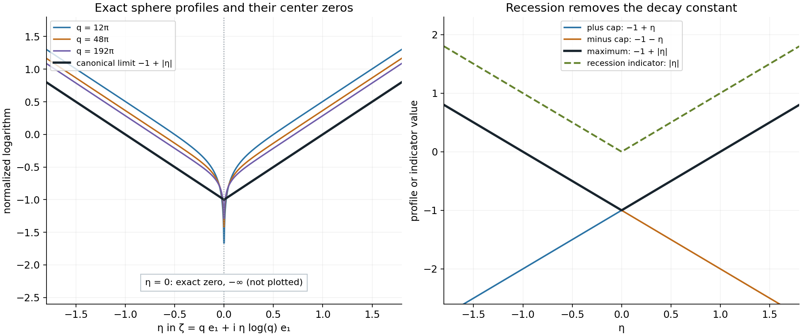
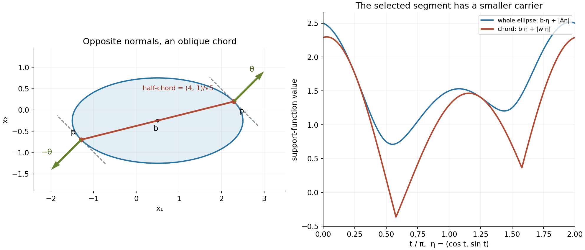

Curved boundaries and directional Fourier carriers
Original exposition and proofs: GPT-6.1 Sol (OpenAI), Ultra. CC0 1.0. Self-checked by the writing AI; independent mathematical review is not claimed.
The Fourier transform of a curved surface is an oscillatory sum. Most of the surface cancels rapidly. Two small regions remain when the frequency direction is fixed: the points where that direction is normal. This lesson shows why the logarithmic Fourier carrier is the segment joining those two points, and how wavefront directions bound carriers for more general distributions.
Basic references are Guillemin and Sternberg's Semi-classical Analysis and Hörmander's The Analysis of Linear Partial Differential Operators I and II. We assume the definitions and compactness in Joint logarithmic-frequency limits, the exact joint maximum theorem in Isolated atoms and separated singularities, and the full uniform expansion in Stationary phase and critical manifolds. The complete proof proves the geometry, the complex-window estimates, both inclusions in the carrier family and the wavefront bound.
1. Two normal points determine the carrier
Let \(X\subset\mathbb R^n\) be a nonempty bounded open convex set with smooth boundary \(\Sigma\). Assume that its second fundamental form is positive definite everywhere, with the outward-normal convention that is positive on a sphere. Take a strictly positive smooth density \(a\) and the compact surface measure
\[ u=a\,dS. \tag{T1} \]For \(\theta\in S^{n-1}\), let \(p_+(\theta)\) be the point with outward normal \(\theta\), and \(p_-(\theta)\) the point with outward normal \(-\theta\). There is exactly one of each. Positive curvature makes the inverse normal maps smooth.
The directional carrier theorem, Theorem 5.1 of the complete proof, is
\[ \mathcal J_\theta(u)=\{H_{D_\theta}\},\qquad D_\theta=[p_-(\theta),p_+(\theta)], \tag{T2} \]where
\[ H_{D_\theta}(\eta)= \max\{p_-(\theta)\cdot\eta,p_+(\theta)\cdot\eta\}. \tag{T3} \]The full family consists of these indicators for all unit directions, and no profile collapses. In dimension one, positive endpoint weights give the single segment that is the interval's closure.
The endpoints have opposite normals. The chord between them need not run in the frequency direction. A support function describes a convex set: (T3) is the support function of one segment, rather than of the whole convex body.
2. The cap calculation and its uniformity
Use the Fourier convention
\[ F_u(\zeta)=\int_\Sigma a(x)e^{-ix\cdot\zeta}\,dS(x),\qquad L_u(z,c)=\frac{\log|F_u(c+z\log|c|)|}{\log|c|}. \tag{T4} \]Put \(c=q\theta\), \(\ell=\log q\) and \(d=n-1\). For a small surface cap at either normal point, Theorem 4.1 gives
\[ F_{u_\pm}(q\theta+\ell z)= q^{-d/2}C_\pm(\theta) e^{-iq\theta\cdot p_\pm(\theta)} e^{-i\ell z\cdot p_\pm(\theta)} \left(1+O_M\!\left(\frac{(1+\ell)^2}{q}\right)\right). \tag{T5} \]This holds uniformly for \(|z|\leq M\) and for directions in a sufficiently small compact neighborhood. The coefficient is
\[ C_\pm(\theta)=(2\pi)^{d/2}e^{\pm i\pi d/4} \frac{a(p_\pm(\theta))}{\sqrt{\kappa(p_\pm(\theta))}}, \tag{T6} \]where \(\kappa>0\) is the Gauss curvature. The \(+\) cap has positive phase Hessian for the phase \(-\theta\cdot x\). The minus cap has negative Hessian. These signs follow from the chosen negative Fourier exponent.
Taking normalized logarithms removes the bounded coefficient and gives
\[ L_{u_\pm}(z,q_j\theta_j)\longrightarrow -\frac d2+p_\pm(\theta_0)\cdot\operatorname{Im}z, \qquad \theta_j\to\theta_0. \tag{T7} \]The constant \(-d/2\) records stationary-phase decay. The recession indicator removes that constant, leaving the point carrier \(\{p_\pm(\theta_0)\}\).
The complex shift matters in proving (T5). In real stationary phase its imaginary part enters the amplitude as \(e^{\ell\,\operatorname{Im}z\cdot x}\). On a chart with \(|x|\leq R\), amplitude derivatives of order \(k\) can be as large as \(q^{RM}(1+\ell)^k\). A one-term absolute error need not be small relative to a leading amplitude as small as \(q^{-RM}\).
The full expansion resolves this. Each coefficient is evaluated at the critical point and shares its leading exponential. Its relative \(j\)-th term is at most \(Cq^{-j}(1+\ell)^{2j}\). The relative remainder at expansion order \(N\) is at most
\[ C_{N,M}q^{-N+2RM}(1+\ell)^{k_N}. \tag{T8} \]Choose \(N>2RM+2\). All finitely many logarithmic powers are absorbed as \(q\to\infty\). This gives the stated uniform relative estimate on each fixed complex parameter ball.
3. Adding the caps and discarding the rest
Cut the surface into two disjoint caps and a remaining smooth surface density:
\[ u=u_++u_-+r. \tag{T9} \]For directions near \(\theta_0\), the phase has no stationary point on the remaining support. Repeated integration by parts proves
\[ \sup_{|z|\leq M}|F_r(q\theta+z\log q)| \leq C_{M,N}q^{-N} \quad\text{for every }M,N. \tag{T10} \]Lemma 2.2 shows that such a remainder preserves every proper profile and every collapsed status on the same frequency sequence.
The two caps have disjoint singular supports. Their joint indicators are the two linear functions from (T7). The exact preceding maximum theorem therefore gives (T3). Its proper maximum excludes a collapsed sum. Compactness of the unit sphere gives a limiting direction for any extracted profile. Conversely, fixed-direction centers realize the indicator for every prescribed direction.
This step uses a joint theorem about indicators. Pointwise logarithms of sums can have cancellations and zeros. A Fourier zero at one parameter value does not turn a proper local \(L^1\) limit into a collapsed profile.
4. Wavefront directions give a general upper bound
A pair \((x,\theta)\), with \(\theta\ne0\), is absent from \(\operatorname{WF}(u)\) when a compact smooth cutoff equal to one near \(x\) makes the real Fourier transform rapidly decreasing in a cone about \(\theta\). This definition keeps location and frequency direction together.
For a compact distribution define
\[ E_\theta(u)=\{x:(x,\theta)\in\operatorname{WF}(u)\},\qquad K_\theta(u)=\operatorname{conv}E_\theta(u). \tag{T11} \]Theorem 6.1 proves that a profile obtained along centers with direction limit \(\theta\) has
\[ h(\eta)\leq H_{K_\theta(u)}(\eta). \tag{T12} \]An empty fiber forces collapse in that direction.
The proof cuts off a small neighborhood of \(E_\theta(u)\). A finite cover of its complement has rapid real Fourier decay in one common cone. Lemma 2.1 carries this decay to all fixed logarithmic complex windows. The remaining compact distribution has support arbitrarily close to the fiber, so its support-function bound tends to (T12).
For a positive density on a positively curved boundary, Corollary 6.2 gives
\[ E_\theta(a\,dS)=\{p_+(\theta),p_-(\theta)\}. \tag{T13} \]Here the general bound is attained exactly.
5. Four worked examples
Example 1. A circle separates the constant from the indicator. For arc-length measure on the unit circle in \(\mathbb R^2\), \(d=1\), \(a=1\), \(\kappa=1\), and \(p_\pm(\theta)=\pm\theta\). The two cap limits are
\[ -\frac12+\theta\cdot\operatorname{Im}z,\qquad -\frac12-\theta\cdot\operatorname{Im}z. \tag{E1} \]Their indicators are the two linear terms. The directional carrier is \([-\theta,\theta]\), with \(h_\theta(\eta)=|\theta\cdot\eta|\). The polynomial decay power of each cap does not enlarge or shrink its point carrier.
Example 2. A sphere has an exact transform and exact zeros. Surface-area measure on the unit sphere in \(\mathbb R^3\) has
\[ F_u(\zeta)=4\pi\sum_{k=0}^\infty \frac{(-1)^k(\zeta\cdot\zeta)^k}{(2k+1)!} =4\pi\frac{\sin r}{r},\qquad r^2=\zeta\cdot\zeta. \tag{E2} \]The series defines the value at zero and makes the choice of square-root sign irrelevant. For real \(\zeta=q\theta\), rotation and the area coordinate \(t=\theta\cdot x\) give \(2\pi\int_{-1}^1e^{-iqt}\,dt=4\pi\sin q/q\). The two entire functions agree on the real space and hence everywhere, by applying the one-variable identity theorem successively in the three coordinates.
If \(c_j=q_j\theta_j\) and \(\theta_j\to\theta\), then uniformly on each fixed complex parameter compact set the root near \(q_j\) satisfies
\[ r(q_j\theta_j+(\log q_j)z) =q_j+(\log q_j)\theta_j\cdot z +O((\log q_j)^2/q_j). \tag{E3} \]At points where \(\theta\cdot\operatorname{Im}z\ne0\), one exponential in the sine dominates. Thus the normalized logarithm tends to
\[ U(z)=-1+|\theta\cdot\operatorname{Im}z|. \tag{E4} \]The exceptional hyperplane has real measure zero. Theorem 5.1 excludes collapse; any proper local \(L^1\) extraction has a further almost-everywhere extraction, so the pointwise limit just proved identifies it almost everywhere with (E4). The canonical PSH representative is (E4). Compactness and uniqueness give the full local \(L^1\) limit.
Nevertheless, at \(z=0\) and \(q_j=j\pi\), every transform is exactly zero. The pointwise normalized logarithm is \(-\infty\), while the proper canonical limit is \(-1\) there. Its recession indicator is \(|\theta\cdot\eta|\).

Figure 1. The left panel evaluates (E2) at \(q e_1+i\eta(\log q)e_1\) for \(q=12\pi,48\pi,192\pi\), using the entire sine quotient. The value at \(\eta=0\) is an exact zero and is omitted from those curves; the annotation records \(-\infty\), not a finite ordinate. The black curve is the canonical limit \(-1+|\eta|\) from Example 2. The right panel shows the individual cap limits \(-1+\eta\) and \(-1-\eta\), their maximum, and the recession indicator \(|\eta|\). The constant is removed only at the recession step. Proof locators: Theorem 4.1; Theorem 5.1; Example 2 and Exercise 7. Background: Guillemin–Sternberg stationary phase and Hörmander logarithmic profiles.
Example 3. An ellipse's normal chord is oblique. Let
\[ X=\left\{x:\frac{(x_1-\frac12)^2}{4} +(x_2+\frac14)^2<1\right\},\qquad b=(\tfrac12,-\tfrac14),\quad A=\operatorname{diag}(2,1). \tag{E5} \]Any strictly positive smooth boundary density satisfies the theorem. A linear functional on \(b+A S^1\) is maximized at \(y=A\theta/|A\theta|\), by Cauchy–Schwarz. Hence
\[ p_\pm(\theta)=b\pm\frac{A^2\theta}{|A\theta|},\qquad h_\theta(\eta)=b\cdot\eta+ \frac{|\eta\cdot A^2\theta|}{|A\theta|}. \tag{E6} \]For \(\theta=(1,1)/\sqrt2\), the half-chord is \((4,1)/\sqrt5\). Its direction differs from \((1,1)\). At \(\eta=(1,-4)\), the segment indicator is \(3/2\), whereas the whole body's support function is \(3/2+\sqrt{20}\). The carrier for this direction is a segment inside the ellipse.

Figure 2. The ellipse is exactly (E5). The marked endpoints are \(b\pm(4,1)/\sqrt5\), their outward normals are \(\pm(1,1)/\sqrt2\), and the dashed tangent lines are perpendicular to those normals. The left panel uses equal coordinate scales. The right panel evaluates the exact support functions \(b\cdot\eta+|\eta\cdot(4,1)/\sqrt5|\) and \(b\cdot\eta+|A\eta|\) at \(\eta=(\cos t,\sin t)\). It compares the selected chord with the full body; no finite plot is a proof of containment. Proof locators: Lemma 3.1; Theorem 5.1; Example 3 and Exercise 2. Background: Hörmander's directional convolution geometry.
Example 4. A smooth direction can force collapse. Choose \(f\in C_c^\infty(\mathbb R)\), positive on \((-1,1)\), with support \([-1,1]\), and let
\[ v=\delta_0(x_1)\otimes f(x_2),\qquad F_v(\zeta_1,\zeta_2)=F_f(\zeta_2). \tag{E7} \]For every direction with \(\theta_2\ne0\), localization leaves a smooth compact function of \(x_2\), whose Fourier transform is rapidly decreasing where \(|\xi_2|\) is a fixed positive fraction of \(|\xi|\). Thus \(E_\theta(v)=\varnothing\), and profiles in that direction collapse by Theorem 6.1.
For a horizontal direction the fiber is \(\{0\}\times[-1,1]\). At an interior point, any cutoff equal to one there leaves a nonzero compact smooth function \(g(x_2)\). Its Fourier transform is nonzero at some finite \(t\), by Fourier injectivity. Along \((q,t)\) it stays independent of \(q\), contradicting rapid decrease in any horizontal cone. Closedness includes the endpoints. Every horizontal-direction profile is therefore bounded by the vertical segment's support function \(H(\eta)=|\eta_2|\). This is an upper bound; no equality for an individual horizontal profile is asserted here.
Exercises with complete solutions
The ten exercises total 100 points.
Exercise 1. The signs and the one-dimensional case (8 points). Compute the profile of \(\delta_p\). Then determine the indicator family of two positive point masses at \(b_-<b_+\).
Solution. Its transform is \(e^{-ip\cdot\zeta}\), so \(\log|F_{\delta_p}(c+z\log|c|)|/\log|c|=p\cdot\operatorname{Im}z\). Its indicator is \(p\cdot\eta\). For the two endpoint masses, the finite-support theorem gives the single indicator \(\max(b_-\eta,b_+\eta)\). No profile collapses. This also proves the dimension-one assertion of Theorem 5.1 without a curvature definition. Award 4 points for the Fourier sign and 4 for the full indicator family.
Exercise 2. Recover the ellipse's normal points (12 points). Prove (E6), check that its endpoints lie on the ellipse, and compare the chord and body at \(\eta=(1,-4)\) for \(\theta=(1,1)/\sqrt2\).
Solution. Write \(x=b+Ay\), \(|y|\leq1\). Then \(\theta\cdot x=\theta\cdot b+(A\theta)\cdot y\). Equality in Cauchy–Schwarz gives \(y=\pm A\theta/|A\theta|\), proving \(p_\pm=b\pm A^2\theta/|A\theta|\). Their transformed coordinates \(A^{-1}(p_\pm-b)\) have length one. At the chosen direction the half-chord is \(w=(4,1)/\sqrt5\). A segment \(b+[-w,w]\) has support function \(b\cdot\eta+|w\cdot\eta|\), whereas the body has \(b\cdot\eta+|A\eta|\). Here \(w\cdot(1,-4)=0\), \(b\cdot(1,-4)=3/2\), and \(|A(1,-4)|=\sqrt{20}\). Award 4 points for maximization, 4 for endpoint and chord geometry, and 4 for the comparison.
Exercise 3. The cap constants on a circle and a sphere (10 points). Find the two constants (4.2) when \(a=\kappa=1\) in dimensions two and three. Check the sphere's leading sum against (E2) at real \(q\theta\).
Solution. For \(n=2\), \(d=1\), so \(C_\pm=\sqrt{2\pi}e^{\pm i\pi/4}\). For \(n=3\), \(d=2\), so \(C_+=2\pi i\) and \(C_-=-2\pi i\). The sphere sum is \(q^{-1}[2\pi i e^{-iq}-2\pi i e^{iq}]=4\pi\sin q/q\), exactly the real transform. The signature signs come from \(-\theta\cdot x\), not from the positive-exponent Fourier convention. Award 4 points for the circle and 6 for the sphere and sign check.
Exercise 4. Why the full expansion is needed (10 points). Suppose \(|x|\leq R=3\) on a chart and \(|z|\leq M=2\). Give an expansion order that controls the relative remainder in (4.7). Explain why merely bounding an absolute one-term error does not establish this.
Solution. Here \(2RM=12\). Any integer \(N>14\), for instance \(N=15\), makes \(q^{-N+12}(1+\log q)^{k_N}=q^{-3}(1+\log q)^{k_N}=O(q^{-2})\) on a tail, and hence certainly \(O(q^{-1})\). The relative coefficient terms are bounded by \(q^{-j}(1+\log q)^{2j}\), whose finite sum is \(O((1+\log q)^2/q)\). An absolute remainder containing \(q^{RM}\) must be divided by a leading amplitude possibly as small as \(q^{-RM}\); this costs the second factor \(q^{RM}\). A fixed one-term estimate does not absorb that loss. Award 4 points for an admissible order, 3 for the finite coefficient sum and 3 for the relative-error explanation.
Exercise 5. The far part of a Fourier convolution (10 points). In Lemma 2.1 take \(n=2\), real growth order \(m=3\), \(RM=4\), and desired bound \(q^{-5}\). Give choices of \(L,k\) for the two parts of the integral.
Solution. The near part is at most \(Cq^{4-L}(1+\log q)^{k_0}\) with fixed \(k_0>2\). Choose \(k_0=4\) and \(L=11\), so it is \(q^{-7}(1+\log q)^4=O(q^{-5})\). The far part is \(Cq^{4+3+2-k}(1+\log q)^k=Cq^{9-k}(1+\log q)^k\). Choose \(k=16\); this gives \(q^{-7}(1+\log q)^{16}=O(q^{-5})\). These are independent estimates on the kernel, so different derivative orders are allowed in the two integrals. The fixed positive gap between direction cones ensures the near frequencies remain in the decay cone. Award 4 points for each exponent calculation and 2 for the cone qualification.
Exercise 6. A rapid error at a Fourier zero (8 points). If two Fourier transforms differ by every inverse power in a logarithmic window, explain why their proper profiles agree even if one has zeros at some parameter values.
Solution. Joint compactness gives proper local \(L^1\) limits \(U,V\), unless both collapse. Extract almost-everywhere convergence. At almost every point \(U\) is finite, so the first transform has modulus \(q^{U(z)+o(1)}\). An error \(O(q^{-N})\) with \(N>-U(z)+2\) divided by this modulus tends to zero. The Fourier ratio tends to one and the normalized logarithms agree in the limit almost everywhere. Canonical PSH recovery gives equality everywhere for the representatives. Exceptional zeros do not justify division there and are unnecessary for this argument. If one coordinate collapses, the triangle inequality makes the other collapse too. Award 5 points for the almost-everywhere argument and 3 for canonical recovery and collapse.
Exercise 7. Exact zeros versus the canonical sphere profile (12 points). Prove that along \(q_j=j\pi\), \(\theta_j=e_1\), the canonical local \(L^1\) sphere profile is \(-1+|\operatorname{Im}z_1|\), although the value at \(z=0\) is always \(-\infty\).
Solution. Expand the square root near \(q_j\) as in (E3). At each point with \(\operatorname{Im}z_1\ne0\), its imaginary part is \((\log q_j)\operatorname{Im}z_1+o(1)\), and \(|r|/q_j\to1\). The growing exponential in \(\sin r=(e^{ir}-e^{-ir})/(2i)\) dominates, giving normalized logarithm \(-1+|\operatorname{Im}z_1|\). The omitted real hyperplane has measure zero. Theorem 5.1 excludes collapse, so every proper extraction is identified almost everywhere by this formula. Its canonical representative is the displayed continuous PSH maximum of two affine functions. Uniqueness under the compactness alternative yields the full local \(L^1\) limit. At \(z=0\), (E2) gives \(\sin(j\pi)=0\) exactly. A value on this exceptional set need not converge to the canonical representative. Award 4 points for the asymptotic, 4 for the measure and compactness argument and 4 for the exact zero and its interpretation.
Exercise 8. Letting the direction move (8 points). Suppose \(\theta_j\to\theta_0\), with no relation imposed between its rate and \(\log q_j\). Does the cap profile formula still hold?
Solution. Yes. The normalized logarithm of (4.1) is \(-d/2+p_\pm(\theta_j)\cdot\operatorname{Im}z+o(1)\), uniformly on each compact \(z\)-set. The large oscillatory factor \(e^{-iq_j\theta_j\cdot p_\pm(\theta_j)}\) has modulus one. The logarithm removes it. Smoothness gives \(p_\pm(\theta_j)\to p_\pm(\theta_0)\), and bounded coefficients divided by \(\log q_j\) vanish. There is no factor \(\log q_j\) left multiplying the error in the normal point after normalization. Award 4 points for the normalized formula and 4 for the lack of a rate requirement.
Exercise 9. Invertibility without universal hull addition (12 points). For \(n\geq2\), show that the surface measure in Theorem 5.1 is invertible, but does not have universal singular-hull addition. Use the exact preceding criteria in Slow decrease and entire Fourier division and Recovering singularities from convolution profiles.
Solution. Invertibility is equivalent to absence of a collapsed profile, which Theorem 5.1 proves. Corollary 6.2 shows that every surface point is singular; the distribution is zero away from the surface. Thus its singular-support convex hull is \(\operatorname{conv}\Sigma=\overline X\). To prove the last equality, each interior point lies on a line segment between the two boundary intersections of a line through it, while the boundary is already included. The universal hull-addition criterion requires the sole indicator \(H_{\overline X}\). Each available carrier \(D_\theta\) is a line segment. Since the body has nonempty interior in dimension at least two, that segment is a proper subset, and its support function differs from the body's support function by convex separation. The criterion therefore fails. Award 4 points for invertibility, 4 for the singular hull and 4 for applying the exact criterion.
Exercise 10. Directional fibers for a smooth line density (10 points). Prove the fiber claims in Example 4, including its support endpoints.
Solution. A localized distribution at \((0,s)\) has the form \(\delta_0(x_1)g(x_2)\), with \(g\) smooth and compactly supported, and Fourier transform \(F_g(\xi_2)\). In a cone with \(\theta_2\ne0\), shrink the cone until \(|\xi_2|\geq c|\xi|\); the Schwartz decay of \(F_g\) then proves absence from the wavefront set. At an interior support point and a horizontal direction, any cutoff equal to one there gives a nonzero \(g\), since \(f>0\) nearby. Fourier injectivity gives a finite \(t\) with \(F_g(t)\ne0\). The frequencies \((q,t)\) or \((-q,t)\) eventually lie in every cone about the corresponding horizontal direction, but this transform does not decay along them. These pairs belong to the wavefront set. The set is closed, so the endpoints \(s=\pm1\) are included as limits of interior pairs. Outside the support it is absent. The horizontal fiber is exactly the closed vertical segment; the other fibers are empty. Award 4 points for the nonhorizontal estimate, 4 for horizontal nondecay and 2 for the endpoints.
References
- Victor Guillemin and Shlomo Sternberg, Semi-classical Analysis, lecture notes, 2010. Online reading. Background on stationary phase.
- Lars Hörmander, The Analysis of Linear Partial Differential Operators I: Distribution Theory and Fourier Analysis, second edition, Springer, 1990. Background on wavefront sets and oscillatory integrals.
- Lars Hörmander, The Analysis of Linear Partial Differential Operators II: Differential Operators with Constant Coefficients, Springer, 1983. Background on logarithmic Fourier profiles and convolution.
Complete proof
A high real frequency singles out the points where its direction is normal to a surface. Positive curvature makes these stationary points nondegenerate. Each point contributes a linear logarithmic Fourier profile, and the two points together determine a segment. We prove this description with uniform estimates, then show how the same localization gives a directional wavefront bound for arbitrary compact distributions.
Basic references are Guillemin and Sternberg's Semi-classical Analysis and Hörmander's The Analysis of Linear Partial Differential Operators I and II. The proof uses the available full expansion, Theorem 5.1 of Stationary phase and critical manifolds, and its Proposition 2.1. The profile prerequisites are Joint logarithmic-frequency limits, Local compactness and Hartogs bounds, and the exact joint maximum law, Theorem 6.1 of Isolated atoms and separated singularities. Fourier inversion, compact-distribution growth and multiplication are those of Compact Fourier division and multiplicity-sensitive annihilators. We assume multivariable calculus, smooth partitions of unity and the inverse function theorem, as in the stationary-phase prerequisite.
1. What a direction can retain
For a compact distribution \(u\) on \(\mathbb R^n\), use
\[ F_u(\zeta)=\langle u,e^{-ix\cdot\zeta}\rangle,\qquad L_u(z,c)=\frac{\log|F_u(c+z\log|c|)|}{\log|c|}, \quad c\in\mathbb R^n,\quad |c|>2. \tag{1.1} \]Along an escaping sequence the PSH compactness alternative gives a proper local \(L^1\) limit \(U\), or locally uniform convergence to \(-\infty\). A proper limit has horizontal envelope and recession indicator
\[ M_U(\eta)=\sup_{x\in\mathbb R^n}U(x+i\eta),\qquad h_U(\eta)=\lim_{t\to\infty}\frac{M_U(t\eta)}t. \tag{1.2} \]The linked horizontal-envelope proof in Joint logarithmic-frequency limits makes \(h_U\) the support function of a nonempty compact convex set. For a collapsed profile set \(h_U=-\infty\), with empty carrier. Write \(\mathcal J(u)\) for the resulting indicator family, and \(\mathcal J_\theta(u)\) when the witnessing centers additionally satisfy \(c/|c|\to\theta\).
For a compact set \(E\), write
\[ H_E(\eta)=\sup_{x\in E}x\cdot\eta,\qquad H_\varnothing=-\infty. \tag{1.3} \]Convexification does not change this function. A proper profile of a distribution supported in \(E\) has \(h_U\leq H_E\), by the compact Fourier growth estimate and the full profile support theorem. A proper constant profile has indicator zero and carrier \(\{0\}\); it is different from a collapsed profile.
Finite joint profiles always use the same escaping centers. We shall use the following exact preceding result: if two compact distributions have disjoint singular supports, then every joint indicator triple for their sum and its two summands satisfies \(h=\max(h_1,h_2)\). Every prescribed coordinate extends to a finite joint extraction. This is Theorem 6.1 of the linked lesson, including its proper and collapsed cases. It is a statement about indicators, rather than a pointwise formula for the logarithm of a sum.
2. Rapid real decay survives a logarithmic complex shift
An open cone here is invariant under multiplication by positive real scalars. Saying that \(F_v\) is rapidly decreasing in a cone \(\Gamma\) means that for every integer \(N\geq0\),
\[ |F_v(\xi)|\leq C_N(1+|\xi|)^{-N},\qquad \xi\in\Gamma. \tag{2.1} \]Lemma 2.1 (conic localization and complex windows). Let \(v\) be a compact distribution satisfying (2.1). Multiplication by any compact smooth function preserves (2.1) on every cone whose unit directions have closure inside \(\Gamma\). Furthermore, for every compact set of such directions, every \(M,N\), and all sufficiently large \(q\),
\[ \sup_{\substack{|z|\leq M\\ \theta\text{ in that set}}} |F_v(q\theta+z\log q)|\leq C_{M,N}q^{-N}. \tag{2.2} \]Proof. Fix \(\chi_0\in C_c^\infty\) equal to one near \(\operatorname{supp}v\), supported in \(\{|x|\leq R\}\). For \(z=\alpha+i\beta\), put \(\ell=\log q\), \(b=q\theta+\ell\alpha\), and
\[ g_{q,\beta}(x)=\chi_0(x)e^{\ell\beta\cdot x}. \tag{2.3} \]The Fourier multiplication identity gives
\[ F_v(b+i\ell\beta) =F_{g_{q,\beta}v}(b) =(2\pi)^{-n}\int_{\mathbb R^n} F_{g_{q,\beta}}(t)F_v(b-t)\,dt. \tag{2.4} \]One way to justify this identity is to insert the absolutely convergent Fourier inversion of \(g_{q,\beta}\) into the distribution pairing. The derivatives of that inversion converge uniformly through the finite order of \(v\), since its Fourier transform is Schwartz. The polynomial real growth of \(F_v\) makes the displayed integral absolutely convergent.
For each integer \(k\), differentiation of (2.3) and integration by parts yield, uniformly for \(|\beta|\leq M\),
\[ |F_{g_{q,\beta}}(t)| \leq C_{k,M}q^{RM}(1+\ell)^k(1+|t|)^{-k}. \tag{2.5} \]In detail, powers of each coordinate \(t_j\) are Fourier transforms of derivatives of \(g_{q,\beta}\). The product rule bounds those derivatives in \(L^1\) by \(Cq^{RM}(1+\ell)^k\). Summing the coordinate bounds and the undifferentiated bound gives (2.5).
Choose \(\varepsilon>0\) so small that for the given compact direction set, \(|\alpha|\leq M\), and large \(q\), all \(b-t\) with \(|t|\leq\varepsilon q\) lie in \(\Gamma\) and satisfy \(|b-t|\geq q/2\). This follows from positive distance on the unit sphere to the complement of \(\Gamma\), and \(\ell M/q\to0\). On this part of the integral, (2.1) with exponent \(L\) and (2.5) with one fixed \(k>n\) give
\[ \int_{|t|\leq\varepsilon q} |F_{g_{q,\beta}}(t)F_v(b-t)|\,dt \leq C_{L,M}q^{RM-L}(1+\ell)^k. \tag{2.6} \]On the complementary part, compact-distribution growth gives \(|F_v(b-t)|\leq C(1+q+|t|)^m\leq C_\varepsilon(1+|t|)^m\). Take \(k>m+n\) in (2.5). Integration in polar coordinates gives the bound
\[ C_{k,M}q^{RM+m+n-k}(1+\ell)^k. \tag{2.7} \]For any desired \(N\), first take \(L>RM+N+1\) and \(k>RM+m+n+N+1\). The corresponding logarithmic factors are \(o(q)\). Equations (2.6) and (2.7) prove (2.2).
For multiplication by a fixed \(\chi\), use \(F_{\chi v}=(2\pi)^{-n}F_\chi*F_v\). The same two parts of the integral work with the Schwartz estimates for \(F_\chi\), with no factor \(q^{RM}\). This proves preservation of real conic rapid decay. \(\square\)
Lemma 2.2 (a rapid remainder preserves the profile). Suppose \(a,b\) are compact distributions and, along given centers \(c_j\), \(q_j=|c_j|\to\infty\), their Fourier difference satisfies
\[ \sup_{|z|\leq M}|F_a(c_j+z\log q_j)-F_b(c_j+z\log q_j)| \leq C_{M,N}q_j^{-N} \tag{2.8} \]for all \(M,N\). Their proper limiting profiles and their collapsed limits on this sequence are the same, with canonical PSH representatives.
Proof. If one profile collapses uniformly locally, its Fourier transform is bounded by every prescribed \(q_j^{-N}\) on a fixed parameter compact set on a tail. The triangle inequality and (2.8) give the same assertion for the other transform. Thus collapse is equivalent.
Suppose a subsequence for \(a\) has proper local \(L^1\) limit \(U\). The locally uniform upper bounds from compact-distribution growth allow a further extraction for \(b\). It cannot collapse, by the preceding argument and the finite integral of \(U\) on a ball. Let its proper limit be \(V\). A further subsequence converges almost everywhere in both coordinates, on an exhaustion by parameter balls. At almost every point \(z\), \(U(z)\) is finite and
\[ |F_a(c_j+z\log q_j)|=q_j^{\,U(z)+o(1)}. \tag{2.9} \]Choose an integer \(N>-U(z)+2\). Equation (2.8) makes the Fourier difference divided by \(F_a\) tend to zero. Hence \(F_b/F_a\to1\) at this point, and the difference of the two normalized logarithms tends to zero. Therefore \(V=U\) almost everywhere. Equality of their canonical PSH representatives follows from their common local integral averages. Every extraction for \(b\) has the same further limit; the compactness alternative therefore gives local \(L^1\) convergence to \(U\) on the original proper subsequence. Interchanging \(a,b\) proves the converse. \(\square\)
3. Two normal points on a positively curved boundary
Let \(X\subset\mathbb R^n\), \(n\geq2\), be nonempty, bounded, open and convex, and let \(\Sigma=\partial X\) be smooth. Use the outward unit normal \(\nu\), with the second fundamental form defined by \(d\nu\) on tangent vectors, so it is positive on a round sphere. Assume this form is positive definite at every point. Write \(d=n-1\) and \(\kappa(x)=\det d\nu(x)>0\).
Lemma 3.1 (the normal points and their Hessians). For each \(\theta\in S^{n-1}\) there are exactly two stationary points of \(x\mapsto-\theta\cdot x\) on \(\Sigma\):
\[ p_+(\theta)=\nu^{-1}(\theta),\qquad p_-(\theta)=\nu^{-1}(-\theta). \tag{3.1} \]The maps \(p_\pm\) are smooth. They are distinct, and the Hessian signatures of the displayed phase are \(+d\) at \(p_+\) and \(-d\) at \(p_-\). In orthonormal tangent coordinates its absolute determinant is \(\kappa(p_\pm)\).
Proof. A linear functional \(\theta\cdot x\) has a maximum and a minimum on the compact convex body \(\overline X\). Both lie on its boundary. A tangent derivative at either extremum vanishes, and the outward orientation gives normals \(\theta\) at a maximum and \(-\theta\) at a minimum.
At every smooth point of a convex body's boundary the outward tangent hyperplane supports the body. To verify this, its local interior lies on the negative side of the normal coordinate, up to the smooth boundary graph. If some point of the body lay strictly on the positive side of the tangent plane, the segment from the boundary point toward an interior point sufficiently close to that point would enter the local interior with a strictly positive first normal derivative. The local graph has zero first derivative there, which is a contradiction. Thus every point with normal \(\theta\) maximizes the functional.
Two distinct maximizers would give a boundary line segment in their supporting face. At an interior point of that segment the tangent vector in the segment direction is nonzero, and differentiating the constant normal component of its straight parametrization gives zero second fundamental form in that direction. Positive definiteness forbids this. The minimizer is unique by the same argument. The normal map is therefore bijective. Its differential is invertible by the curvature assumption, and the inverse function theorem makes its inverse smooth locally and hence globally. Distinct maximum and minimum points follow because \(X\) has nonempty interior.
At a point \(p\), choose orthonormal tangent coordinates and write the surface as \(p+t+g(t)\nu(p)\), with \(g(0)=0\) and \(Dg(0)=0\). Differentiating the unit normal at zero gives \(d\nu=-g''(0)\). At \(p_+\), the phase Hessian is \(-g''(0)=d\nu\), while at \(p_-\) it is \(g''(0)=-d\nu\). The signatures and determinants follow. The area density at \(t=0\) is one. Compact parameter neighborhoods give uniform inverse-Hessian and derivative bounds. \(\square\)
Set
\[ D_\theta=[p_-(\theta),p_+(\theta)],\qquad H_{D_\theta}(\eta)= \max\{p_-(\theta)\cdot\eta,p_+(\theta)\cdot\eta\}. \tag{3.2} \]The segment joins points with opposite normals. Its direction need not be parallel to \(\theta\). Also \(D_{-\theta}=D_\theta\).
4. A single cap in a complex logarithmic window
Let \(a\in C^\infty(\Sigma)\) be strictly positive and \(u=a\,dS\). Fix \(\theta_0\). Choose two disjoint smooth cap cutoffs \(\chi_+,\chi_-\), equal to one near \(p_+(\theta_0),p_-(\theta_0)\), and supported in disjoint small surface charts. Shrink a neighborhood \(V\) of \(\theta_0\) so that these cutoffs remain one near \(p_\pm(\theta)\) for every \(\theta\in\overline V\). Put \(u_\pm=\chi_\pm a\,dS\).
Theorem 4.1 (uniform cap asymptotic). For each fixed \(M\), uniformly for \(\theta\in\overline V\), \(|z|\leq M\), as \(q\to\infty\),
\[ F_{u_\pm}(q\theta+z\log q)= q^{-d/2}C_\pm(\theta) e^{-iq\theta\cdot p_\pm(\theta)} e^{-i(\log q)z\cdot p_\pm(\theta)} \left(1+O_M\!\left(\frac{(1+\log q)^2}{q}\right)\right), \tag{4.1} \]where
\[ C_\pm(\theta)= (2\pi)^{d/2}e^{\pm i\pi d/4} \frac{a(p_\pm(\theta))}{\sqrt{\kappa(p_\pm(\theta))}}. \tag{4.2} \]In particular \(C_\pm\) are bounded away from zero on \(\overline V\). If \(\theta_j\to\theta_0\), then
\[ L_{u_\pm}(z,q_j\theta_j)\longrightarrow -\frac d2+p_\pm(\theta_0)\cdot\operatorname{Im}z \tag{4.3} \]uniformly on each parameter compact set.
Proof. In each fixed chart write the Fourier integral with the real phase \(\phi_\theta(x)=-\theta\cdot X(x)\) and amplitude
\[ A_{q,z}(x)=\chi_\pm(X(x))a(X(x))J(x) e^{-i(\log q)z\cdot X(x)}, \tag{4.4} \]where \(J\) is the area density. All chart supports are fixed and compact. Lemma 3.1 supplies one smooth critical point, a uniformly invertible Hessian, and a uniform gradient lower bound away from a smaller critical neighborhood. Thus the full uniform real stationary-phase theorem applies for every chosen order \(N\), with \(q\) its large real parameter.
Choose \(R\) bounding \(|X|\) on the chart. The product and chain rules give, for every fixed \(k\),
\[ \|A_{q,z}\|_{C^k} \leq C_{k,M}q^{RM}(1+\log q)^k,\qquad |z|\leq M. \tag{4.5} \]The expansion's coefficient of order \(j\) uses only derivatives of the amplitude through order \(2j\) at the critical point. Each such derivative contains the same exponential \(e^{-i(\log q)z\cdot p_\pm(\theta)}\), multiplied by a polynomial in \((\log q)z\) of degree at most \(2j\). The coefficients of these polynomials are uniformly bounded. Since the leading density is positive and bounded away from zero, the ratio of the \(j\)-th term to the leading term is bounded by
\[ C_{j,M}q^{-j}(1+\log q)^{2j}. \tag{4.6} \]For each fixed finite \(N\), summing \(1\leq j<N\) gives \(O_M((1+\log q)^2/q)\).
It remains to control the remainder relative to the leading term. The prerequisite's normalized remainder estimate and (4.5) bound it by \(C_{N,M}q^{-N+RM}(1+\log q)^{k_N}\), before dividing by the leading amplitude. The modulus of the leading exponential is at least \(q^{-RM}\); the remaining leading density has a positive uniform lower bound. Therefore the relative remainder is at most
\[ C_{N,M}q^{-N+2RM}(1+\log q)^{k_N}. \tag{4.7} \]Choose an integer \(N>2RM+2\). The finite logarithmic power is eventually less than any fixed positive power of \(q\), so (4.7) is \(O(q^{-1})\), and is absorbed by (4.6). This choice may depend on \(M\). A one-term expansion without this higher-order argument would not suffice for uniform relative control.
The leading coefficient is intrinsic. At each critical point the orthonormal graph calculation in Lemma 3.1 gives area density one, absolute Hessian determinant \(\kappa\), and signature \(\pm d\). The usual change-of-coordinate Jacobians in the available stationary-phase formula give exactly (4.2) in any chart. This proves (4.1).
The bracket in (4.1) is uniformly nonzero on each fixed parameter compact set for sufficiently large \(q\). Take its modulus and logarithm. The oscillatory real factor has modulus one, while the complex factor contributes \((\log q)p_\pm(\theta)\cdot\operatorname{Im}z\). The term \(\log|C_\pm(\theta)|/\log q\) tends uniformly to zero, as does the logarithm of the bracket divided by \(\log q\). Smoothness of \(p_\pm\) proves (4.3). \(\square\)
5. The whole surface has a segment for each direction
Theorem 5.1 (all directional carriers of a curved boundary). Under the hypotheses of Sections 3 and 4,
\[ \mathcal J_\theta(a\,dS)=\{H_{D_\theta}\}, \qquad \mathcal J(a\,dS)= \{H_{D_\theta}:\theta\in S^{n-1}\}. \tag{5.1} \]Every profile is proper. The statement also holds in dimension one for an interval and positive weights at its two boundary points.
Proof. Work first near one direction \(\theta_0\). With the two cutoffs already chosen, write
\[ u=u_++u_-+r,\qquad r=(1-\chi_+-\chi_-)a\,dS. \tag{5.2} \]The support of \(r\) stays away from both normal points for directions in \(\overline V\). Cover that compact support by finitely many surface charts. In every chart the real phase \(-\theta\cdot X(x)\) has gradient bounded below uniformly for \(\theta\in\overline V\). For \(|z|\leq M\) the amplitudes obey bounds of the form (4.5). Apply Proposition 2.1 of the stationary-phase prerequisite with as many integrations by parts as needed. For every \(M,N\) this gives
\[ \sup_{\substack{|z|\leq M\\\theta\in\overline V}} |F_r(q\theta+z\log q)|\leq C_{M,N}q^{-N}. \tag{5.3} \]For example, an integration order \(k>RM+N+1\) absorbs the polynomial exponential weight and its finite logarithmic derivative factor. A finite partition of unity adds only finitely many such estimates.
Lemma 2.2 therefore identifies the profiles of \(u\) with those of \(s=u_++u_-\) on every sequence whose directions approach \(\theta_0\). The two cap distributions have disjoint ordinary supports and hence disjoint singular supports. Theorem 4.1 gives proper affine limits with indicators \(p_\pm(\theta_0)\cdot\eta\). The preceding exact joint maximum theorem, after extending an extracted profile of \(s\) to a finite joint tuple, gives
\[ h_s(\eta)= \max\{p_+(\theta_0)\cdot\eta,p_-(\theta_0)\cdot\eta\} =H_{D_{\theta_0}}(\eta). \tag{5.4} \]It also excludes collapse of \(s\): the maximum of the two proper indicators is proper. Thus \(u\) cannot collapse on such a sequence.
For any profile of \(u\), compactness of the unit sphere permits a further subsequence of its witnessing centers with a limiting direction \(\theta_0\). The prescribed proper limit or collapsed status remains unchanged under further extraction. The argument above forces properness and gives its indicator \(H_{D_{\theta_0}}\). This proves one inclusion in the full family.
Conversely, fix any \(\theta_0\) and take \(c_j=q_j\theta_0\) with \(q_j\to\infty\). Compactness gives an extracted profile of \(s\), and finite joint extraction retains both known cap limits. Equation (5.4) makes that profile proper with the prescribed segment indicator. Lemma 2.2 transfers it to \(u\). This proves the other inclusion and the asserted directional equality.
For \(n=1\), write \(X=(b_-,b_+)\). Its surface measure is counting measure on the two endpoints, so \(u=a_-\delta_{b_-}+a_+\delta_{b_+}\), with \(a_\pm>0\). The finite-support theorem in Isolated atoms and separated singularities gives the single indicator \(H_{[b_-,b_+]}\), with no collapsed profile. Both directions select this same segment. \(\square\)
Theorem 5.1 determines the indicator family. It does not identify every total limiting profile with \(-d/2+H_{D_\theta}(\operatorname{Im}z)\), or assert convergence at Fourier zeros. The individual caps have the uniform limit (4.3); the sum is treated through a joint indicator theorem.
6. A directional bound from the wavefront set
For a distribution \(u\), define \((x_0,\xi_0)\notin\operatorname{WF}(u)\), with \(\xi_0\ne0\), if some \(\chi\in C_c^\infty\), equal to one near \(x_0\), has \(F_{\chi u}\) rapidly decreasing in an open cone containing \(\xi_0\). This definition makes the complement open: the same cutoff works at nearby points, and a smaller cone works at nearby directions. Thus \(\operatorname{WF}(u)\) is closed and invariant under positive scaling of its second coordinate. No point outside \(\operatorname{supp}u\) lies in it, since a cutoff there gives the zero distribution.
For a compact distribution and a unit direction, set
\[ E_\theta(u)=\{x:(x,\theta)\in\operatorname{WF}(u)\},\qquad K_\theta(u)=\operatorname{conv}E_\theta(u). \tag{6.1} \]The fiber \(E_\theta(u)\) is compact. Its convex hull is compact if nonempty, by the finite-dimensional compact-convex-hull theorem; use the empty hull otherwise.
Theorem 6.1 (directional wavefront bound). A profile witnessed by centers with direction limit \(\theta\) has
\[ h(\eta)\leq H_{K_\theta(u)}(\eta) \quad\text{for every }\eta\in\mathbb R^n. \tag{6.2} \]If the fiber is empty, every profile on such a sequence collapses. Consequently every \(h\in\mathcal J(u)\) is bounded above by the support function of a directional wavefront fiber hull for at least one nonzero direction.
Proof. Suppose first that \(E_\theta(u)\) is nonempty. For \(\varepsilon>0\), choose a compact smooth cutoff \(\chi\) equal to one near this fiber and supported within its open \(\varepsilon\)-neighborhood. Put \(w=\chi u\) and \(v=(1-\chi)u\). Every point of the compact support of \(v\) has a wavefront-free neighborhood for the direction \(\theta\). Choose finitely many such neighborhoods, cutoffs \(\chi_j=1\) there and corresponding Fourier-decay cones \(\Gamma_j\).
A smooth finite partition of unity near \(\operatorname{supp}v\), with each coefficient \(\rho_j\) compactly supported where \(\chi_j=1\), writes
\[ v=\sum_j\rho_j(1-\chi)\chi_j u. \tag{6.3} \]For completeness, choose nonnegative bumps supported in the neighborhoods and positive on a smaller finite cover of that compact set. Their sum is positive near it. Divide each bump by that sum there, and multiply by one additional compact cutoff equal to one near the set and supported where the sum is positive. Extending by zero gives the required coefficients and identity of distributions.
Each \(\chi_j u\) has real rapid decay in \(\Gamma_j\). Lemma 2.1 preserves that decay after the fixed smooth multiplier \(\rho_j(1-\chi)\). The finitely many smaller cones contain one common cone about \(\theta\). Their finite sum \(v\) is rapidly decreasing in that cone. The same lemma gives every inverse-power bound on its logarithmic complex windows whenever \(c/|c|\to\theta\).
If a profile \(U\) of \(u=w+v\) is proper, Lemma 2.2 gives that same proper profile for \(w\). Its compact-support indicator bound yields
\[ h_U(\eta)\leq H_{\operatorname{supp}w}(\eta) \leq H_{E_\theta(u)}(\eta)+\varepsilon|\eta|. \tag{6.4} \]Let \(\varepsilon\downarrow0\). Convexification leaves the support function unchanged, proving (6.2). A collapsed indicator already satisfies it.
If \(E_\theta(u)=\varnothing\), apply the finite-cover construction directly to \(\operatorname{supp}u\). It gives real rapid decay for \(F_u\) in a cone about \(\theta\), and (2.2) makes every normalized logarithm tend uniformly to \(-\infty\) locally. The empty-fiber assertion follows.
Finally, take any witnessing sequence for a member of \(\mathcal J(u)\) and extract a direction limit on the unit sphere. Proper local \(L^1\) convergence or collapsed convergence is retained. Equation (6.2) then gives the desired nonzero direction. \(\square\)
Corollary 6.2 (the curved surface has exactly its normal wavefront). For the positive smooth density of Theorem 5.1,
\[ \operatorname{WF}(a\,dS)= \{(x,t\nu(x)):x\in\Sigma,\ t\in\mathbb R\setminus\{0\}\}. \tag{6.5} \]Thus \(E_\theta(u)=\{p_+(\theta),p_-(\theta)\}\), and (6.2) is sharp.
Proof. At a surface point and a direction not parallel to its normal, choose a sufficiently small surface cutoff. The phase gradient has a positive lower bound in a smaller cone. The nonstationary estimate gives real rapid decay, so that pair is absent from the wavefront set. Away from the surface the distribution is zero.
Now take \(p\in\Sigma\) and \(\theta=\nu(p)\) or \(-\nu(p)\). If a cutoff \(\chi=1\) near \(p\) made \(F_{\chi u}\) rapidly decreasing in a cone about \(\theta\), multiply by a smaller smooth cap cutoff \(\rho\), equal to one near \(p\), with support where \(\chi=1\). Lemma 2.1 would make \(F_{\rho u}\) rapidly decreasing in a smaller cone. But Theorem 4.1 at \(z=0\) gives a nonzero leading coefficient times \(q^{-d/2}\) along \(q\theta\), contradicting rapid decrease. Both normal signs therefore occur. Positive scaling and the two signs give all the stated covectors. The fiber description follows from Lemma 3.1, and sharpness follows from Theorem 5.1. \(\square\)
References
- Victor Guillemin and Shlomo Sternberg, Semi-classical Analysis, lecture notes, 2010. Online reading. Background on oscillatory integrals and stationary phase.
- Lars Hörmander, The Analysis of Linear Partial Differential Operators I: Distribution Theory and Fourier Analysis, second edition, Springer, 1990. Background on distributions, wavefront sets and stationary phase.
- Lars Hörmander, The Analysis of Linear Partial Differential Operators II: Differential Operators with Constant Coefficients, Springer, 1983. Background on logarithmic Fourier profiles and convolution geometry.